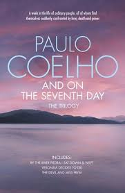

The Alchemist follows the journey of an Andalusian shepherd boy named Santiago. Believing a recurring dream to be prophetic, he asks a Romani fortune-teller in a nearby town about its meaning. The woman interprets the dream as a prophecy telling the boy that he will discover a treasure at the Egyptian pyramids. Early into his journey, he meets an old king named Melchizedek or the king of Salem, who tells him to sell his sheep so as to travel to Egypt and introduces the idea of a Personal Legend. Your Personal Legend "is what you have always wanted to accomplish. Everyone, when they are young, knows what their Personal Legend is." He adds that "when you want something, all the universe conspires in helping you to achieve it." This is the core theme of the book.
Paulo Coelho’s third novel, Brida, tells the story of a young woman on a quest for knowledge and fulfillment. As the novel begins, Brida seeks out two teachers. The first is Magnus, who teaches her about the tradition of the sun, in addition to helping her conquer her fears. In Brida, Magnus sees his soul mate—essentially the other half of his own soul. The second teacher is Wicca, who instructs Brida in the knowledge and rituals of the tradition of the moon. While practicing these rituals, studying tarot cards, and dancing to the sound of the world, Brida begins to understand that she is a witch. While the forward movement of the plot is somewhat slow—consisting mostly of conversations between Brida and the characters, the pace begins to quicken when Brida has a vision of a previous life where she is a woman preparing to die with the Cathars in the fortress of Monsegur in thirteenth-century France. She is then awakened from her vision and proceeds with training in the rituals and training needed to become a witch. As a character, Brida is unsympathetic and self-absorbed. She uses those around her to achieve her goals. Similarly, Wicca is difficult to understand and warm up to. This mentor shares many of the same characteristics as Brida. However, Magnus is quite the opposite. He is quite amenable, and the portions of the book written from his perspective are more palatable. Lorens, another prominent character in the novel, and Brida’s lover, although likable in many ways, is not as well rounded as Magnus and Wicca and therefore does not capture the reader’s interest as thoroughly as the others.

Maria, a young girl from a remote village of Brazil, whose first encounters with love leave her heartbroken, goes to seek her fortune in Switzerland. She works for a time in a nightclub but soon becomes dissatisfied and after a heated discussion with her manager one night, she quits her job. She tries to become a model but is unsuccessful. Because she is running out of money, she accepts 1000 francs from an Arab man to spend the night with him. She then decides to become a prostitute and ends up in a brothel on Rue de Berne, the heart of Geneva's red-light district. There she befriends Nyah who gives her advice on her "new profession" and after learning the tricks of the trade from Milan, the brothel owner, she enters the job with her body and mind shutting all doors for love and keeps her heart open only for her diary. Quickly she becomes quite successful and famous and her colleagues begin to envy her. Months pass and Maria grows into a professionally groomed prostitute who not only relaxes her clients' minds, but also calms their souls by talking to them about their problems. Her world turns upside down when she meets Ralf, a young Swiss painter, who sees her "inner light". Maria falls in love with him immediately and begins to experience what "true love" is (according to the author, it is a sense of being for someone without actually possessing him/her). Maria is now split between her sexual fantasies and true love for Ralf. Eventually she decides that it is time for her to leave Geneva with her memory of Ralf, because she realizes that they are worlds apart. But before leaving, she decides to rekindle the dead sexual fire in Ralf and learns from him about the nature of Sacred Sex, sex which is mingled with true love and which involves the giving up of one's soul for the loved one.
A week in the life of ordinary people, all of whom find themselves suddenly confronted by love, death and power. this stunning thematic trilogy from the bestselling author of the Alchemist contains three of Paulo Coelho's most beloved titles. By the River Piedra I Sat Down and Wept traces the journey of two lovers on a timeless spiritual quest across the Pyrenees. In this exhilarating and magical novel, you will discover the deep secrets of life and love, told in the tradition of Coelho's beloved bestseller the Alchemist. Veronika Decides to Die is a moving and uplifting story of life, centred around the days following the heroine's suicide attempt. In this, she questions the idea of madness and comes to realise that every second of existence is a choice that we all make between living and dying. the Devil and Miss Prym is set in the remote village of Viscos, and tells the story of a community devoured by greed, cowardice and fear. In his inimitable style, Coelho dramatises the struggle within every soul between light and darkness. this is an emotion-charged story, in which the integrity of being human meets a terrifying test. And on the Seventh Day is the latest offering from this incomparable storyteller and is an inspirational collection that no lover of literature should be without
The story of the book is a portrayal of real life experience of the author. The story starts when Paulo meets his guru/teacher Mr. J after a long time and tells him about the new book “The alchemist”, that he has written. He was in an impression that he will feel very happy about the same but to his surprise he seemed to be just neutral. They talked about many things in this meeting. Paulo told his feeling to his master and says “One way or the other, I have wound up destroying what I have loved. I have seen my dreams fall apart just when I seemed about to achieve them. I always thought that was just the way life was”. His master Mr. J then tells Paulo that this curse can be broken and gives him a task. The task was to go and speak to his guardian Angel. Paulo has no idea about what he is supposed to go about it, but he just followed his master’s order. He, along with his wife left for this mission of speaking to their angels and lands up in the Magus Desert in The US. In the desert they come across Valkyries, who further helped them in their search for angels.